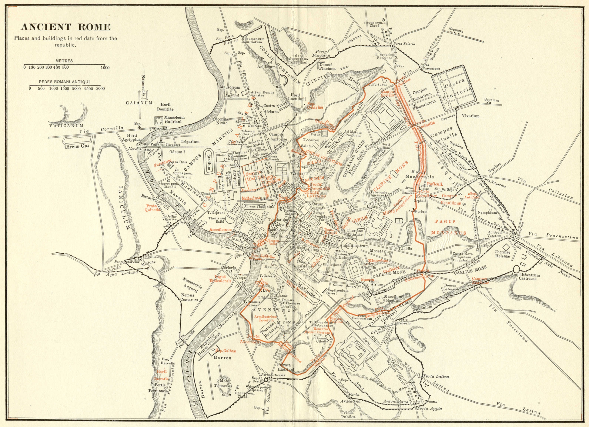

Throughout the history of Rome, the urban limits of the city were considered to be the area within the city's walls. Originally, these consisted of the Servian Wall, which was built twelve years after the Gaulish sack of the city in 390 BC. This contained most of the Esquiline and Caelian hills, as well as the whole of the other five. Rome outgrew the Servian Wall, but no more walls were constructed until almost 700 years later, when, in 270 AD, Emperor Aurelian began building the Aurelian Walls. These were almost 19 km long, and were still the walls the troops of the Kingdom of Italy had to breach to enter the city in 1870. The city's urban area is cut in two by its ring-road, the Grande Raccordo Anulare ("GRA"), finished in 1962, which circles the city centre at a distance of about 10 km. Although when the ring was completed most parts of the inhabited area lay inside it (one of the few exceptions was the former village of Ostia, which lies along the Tyrrhenian coast), in the meantime quarters have been built which extend up to 20 km beyond it.
Other pages